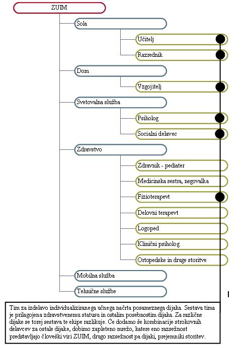
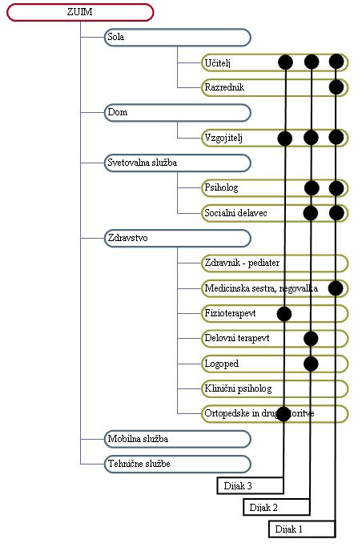

|
Organizacija je združba ljudi, ki so se združili zato, da bi zasledovali in uresnièevali dogovorjene skupne cilje. Tudi CIRIUS Kamnik je taka organizacija. V CIRIUS so združeni ljudje zato, da zasledujejo dogovorjene skupne cilje. Ti dogovorjeni skupni cilji so zapisani v statutu CIRIUS Kamnik in v Aktu o ustanovitvi CIRIUS Kamnik. Dejavnosti, ki jih izvajajo zaposleni v CIRIUS Kammik, zahtevajo znanje na razliènih podroèjih. CIRIUS je zato razdeljen v pet organizacijskih enot. Za posamezne dijake so zaradi razliènih zdravstvenih težav predviden razliène obravnave. Pri obravnavah razliènih dijakov torej sodelujejo razlièni strokovnjaki. Kombinacije strokovnih delavcev se torej za posamezne dijake razlikujejo med seboj. Vèasih se izkaže, da kakšna obravnava za posameznega dijaka ni veè potrebna. Sodelovanje delavca, zadolženega za to obravnavo (denimo psihologa) torej ni veè potrebno. Ekipa strokovnih delavcev za posameznega dijaka se torej lahko spreminja tudi s èasom. Kombinacije, skupine ali timi strokovnih delavcev so torrej za posamezne dijake razlièni. Vsi timi za vse obravnavane dijake skupaj pa sestavljajo organizacijsko mrežo.  Slika 1: Skupina strokovnih delavcev, ki obravanava dijaka  Slika 2: Mreža skupin strokovnih delavcev, ki obravnavajo tri dijake 1. Vprašanja za usmerjanje pozornosti in usvajanje novih besed: 1. S pomoèjo slik ugotovi, katere organizacijske enote sestavljajo CIRIUS Kamnik? 2. S pomoèjo slik ugotovi, katera organizacijska enota izvaja dejavnost osnovnega izobraževanja v CIRIUS? 3. S pomoèjo slik ugotovi, katera organizacijska enota izvaja dejavnost poklicnega in srednjega izobraževanja v CIRIUS? 4. S pomoèjo slik ugotovi, katera organizacijska enota izvaja dejavnost domske vzgoje v CIRIUS? 5. S pomoèjo slik ugotovi, katera organizacijska enota izvaja dejavnost vzdrževanja v CIRIUS? 6. S pomoèjo slik ugotovi, katera organizacijska enota izvaja dejavnost osnovne in specialistiène zdravstvene dejavnosti v CIRIUS? 7. Naštej strokovne delavce, ki sodelujejo v obravnavi dijaka 1 na drugi sliki? 8. Naštej strokovne delavce, ki sodelujejo v obravnavi dijaka 2 na drugi sliki? 9. Naštej strokovne delavce, ki sodelujejo v obravnavi dijaka 3 na drugi sliki? 2. Zapiši od ene do pet kljuènih besed, ki povzemajo vsebino te uène enote. 3. Vprašanja za razmislek, ponavljanje in povezovanje z lastno izkušnjo: 1. Ali lahko obravnavamo kot organizacijo tudi nogometno ekipo? 2. Naštej še nekaj športnih ekip, ki jih lahko razumemo kot organizacije? 4. Domaèa naloga: V enem do petih stavkih zapiši, kaj ti je v tej uèni enoti najbolj ostalo v spominu. |